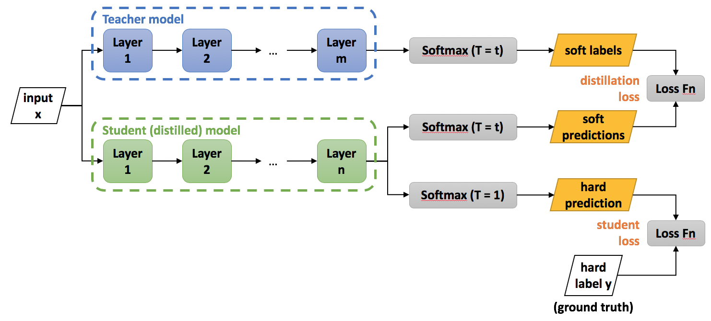

Knowledge Distillation
(For details on how to train a model with knowledge distillation in Distiller, see here)
Knowledge distillation is model compression method in which a small model is trained to mimic a pre-trained, larger model (or ensemble of models). This training setting is sometimes referred to as "teacher-student", where the large model is the teacher and the small model is the student (we'll be using these terms interchangeably).
The method was first proposed by Bucila et al., 2006 and generalized by Hinton et al., 2015. The implementation in Distiller is based on the latter publication. Here we'll provide a summary of the method. For more information the reader may refer to the paper (a video lecture with slides is also available).
In distillation, knowledge is transferred from the teacher model to the student by minimizing a loss function in which the target is the distribution of class probabilities predicted by the teacher model. That is - the output of a softmax function on the teacher model's logits. However, in many cases, this probability distribution has the correct class at a very high probability, with all other class probabilities very close to 0. As such, it doesn't provide much information beyond the ground truth labels already provided in the dataset. To tackle this issue, Hinton et al., 2015 introduced the concept of "softmax temperature". The probability of class is calculated from the logits as:
where is the temperature parameter. When we get the standard softmax function. As grows, the probability distribution generated by the softmax function becomes softer, providing more information as to which classes the teacher found more similar to the predicted class. Hinton calls this the "dark knowledge" embedded in the teacher model, and it is this dark knowledge that we are transferring to the student model in the distillation process. When computing the loss function vs. the teacher's soft targets, we use the same value of to compute the softmax on the student's logits. We call this loss the "distillation loss".
Hinton et al., 2015 found that it is also beneficial to train the distilled model to produce the correct labels (based on the ground truth) in addition to the teacher's soft-labels. Hence, we also calculate the "standard" loss between the student's predicted class probabilities and the ground-truth labels (also called "hard labels/targets"). We dub this loss the "student loss". When calculating the class probabilities for the student loss we use .
The overall loss function, incorporating both distillation and student losses, is calculated as:
where is the input, are the student model parameters, is the ground truth label, is the cross-entropy loss function, is the softmax function parameterized by the temperature , and and are coefficients. and are the logits of the student and teacher respectively.

New Hyper-Parameters
In general , and are hyper parameters.
In their experiments, Hinton et al., 2015 use temperature values ranging from 1 to 20. They note that empirically, when the student model is very small compared to the teacher model, lower temperatures work better. This makes sense if we consider that as we raise the temperature, the resulting soft-labels distribution becomes richer in information, and a very small model might not be able to capture all of this information. However, there's no clear way to predict up front what kind of capacity for information the student model will have.
With regards to and , Hinton et al., 2015 use a weighted average between the distillation loss and the student loss. That is, . They note that in general, they obtained the best results when setting to be much smaller than (although in one of their experiments they use ). Other works which utilize knowledge distillation don't use a weighted average. Some set while leaving tunable, while others don't set any constraints.
Combining with Other Model Compression Techniques
In the "basic" scenario, the smaller (student) model is a pre-defined architecture which just has a smaller number of parameters compared to the teacher model. For example, we could train ResNet-18 by distilling knowledge from ResNet-34. But, a model with smaller capacity can also be obtained by other model compression techniques - sparsification and/or quantization. So, for example, we could train a 4-bit ResNet-18 model with some method using quantization-aware training, and use a distillation loss function as described above. In that case, the teacher model can even be a FP32 ResNet-18 model. Same goes for pruning and regularization.
Tann et al., 2017, Mishra and Marr, 2018 and Polino et al., 2018 are some works that combine knowledge distillation with quantization. Theis et al., 2018 and Ashok et al., 2018 combine distillation with pruning.
References
Cristian Bucila, Rich Caruana, and Alexandru Niculescu-Mizil. Model Compression. KDD, 2006Geoffrey Hinton, Oriol Vinyals and Jeff Dean. Distilling the Knowledge in a Neural Network. arxiv:1503.02531
Hokchhay Tann, Soheil Hashemi, Iris Bahar and Sherief Reda. Hardware-Software Codesign of Accurate, Multiplier-free Deep Neural Networks. DAC, 2017
Asit Mishra and Debbie Marr. Apprentice: Using Knowledge Distillation Techniques To Improve Low-Precision Network Accuracy. ICLR, 2018
Antonio Polino, Razvan Pascanu and Dan Alistarh. Model compression via distillation and quantization. ICLR, 2018
Anubhav Ashok, Nicholas Rhinehart, Fares Beainy and Kris M. Kitani. N2N learning: Network to Network Compression via Policy Gradient Reinforcement Learning. ICLR, 2018
Lucas Theis, Iryna Korshunova, Alykhan Tejani and Ferenc Huszár. Faster gaze prediction with dense networks and Fisher pruning. arxiv:1801.05787